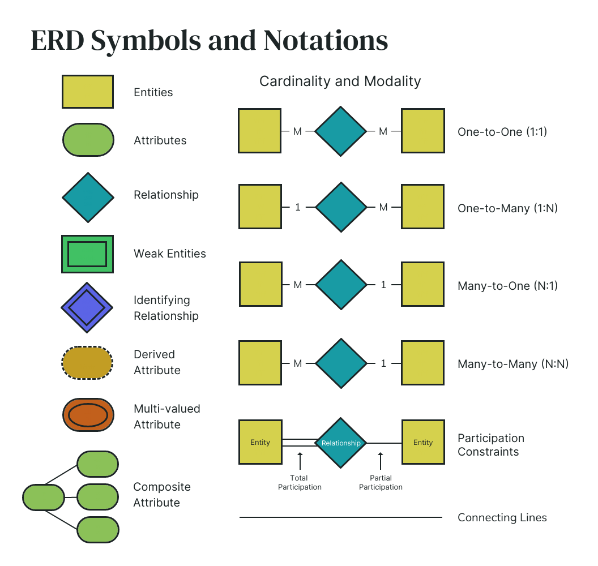
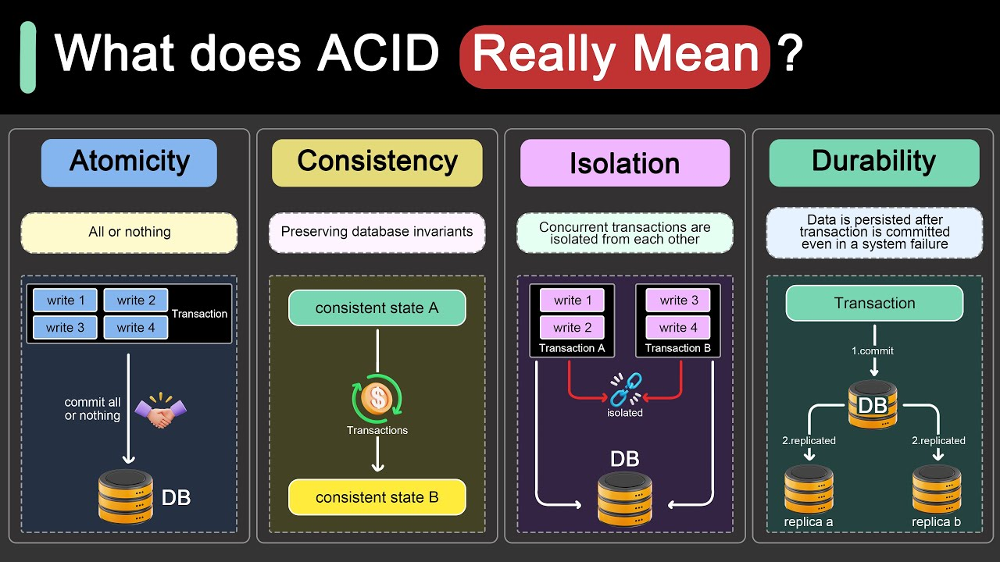
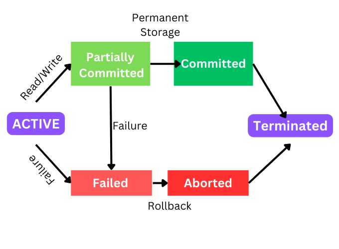
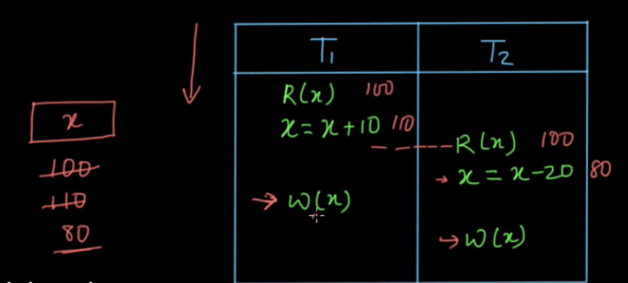
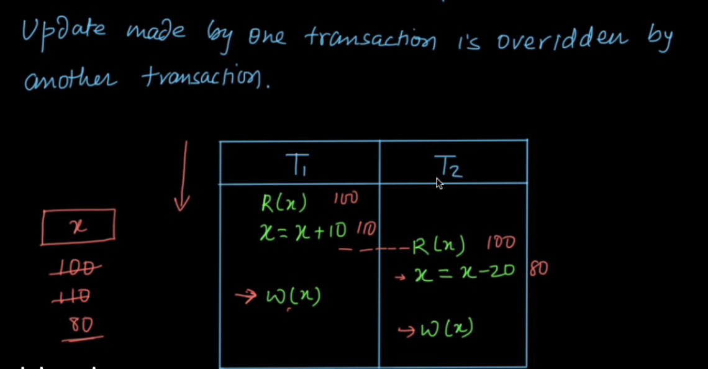
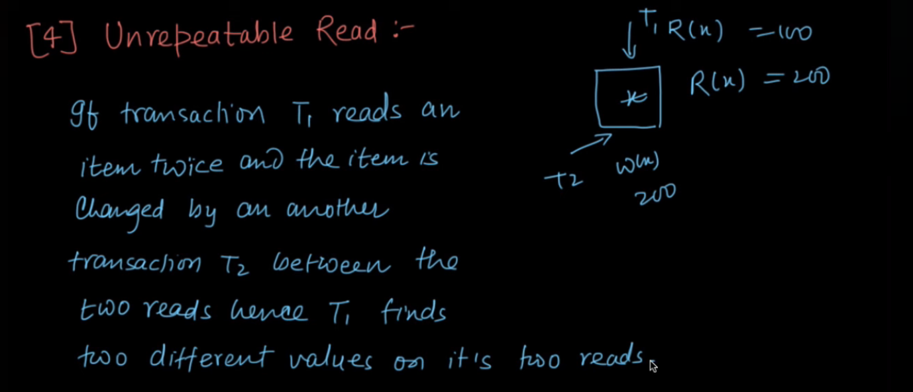
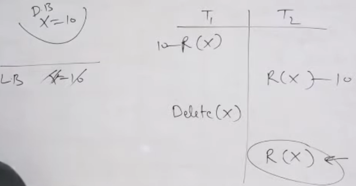

📘 DBMS Placement Notes (Topics 1–4)
1️⃣ Introduction to DBMS
🔹 What is DBMS?
- Database Management System (DBMS): Software that manages and organizes data efficiently.
- Provides storage, retrieval, security, and integrity of data.
🔹 Advantages over File System
- ❌ File System Problems: Data redundancy, inconsistency, poor security.
- ✅ DBMS Benefits: Reduced redundancy, data integrity, concurrent access, security.
🔹 DBMS Architecture
🔹 Types of Data Models
- Relational Model (most used)
- Hierarchical Model
- Network Model
- ER Model
🔹 DBMS vs RDBMS
- DBMS: Data stored as files, no relationships.
- RDBMS: Data stored in tables (relations) with keys (e.g., MySQL, PostgreSQL).
🔹 DBMS vs RDBMS (Differences Only)
| Feature |
DBMS |
RDBMS |
| Data storage |
Stores data in files or simple structures |
Stores data in tables (rows and columns) |
| Data relationship |
Does not support relationships |
Supports relationships using keys |
| Data redundancy |
High |
Low |
| Data integrity |
Limited |
Strong (constraints) |
| Normalization |
Not supported |
Supported |
| Transactions |
Limited or no support |
Full ACID support |
| Multi-user access |
Limited |
Supports multiple users |
| Security |
Basic |
Advanced |
| Scalability |
Low |
High |
| Examples |
File system, simple DBMS |
MySQL, Oracle, SQL Server |
2️⃣ Entity–Relationship (ER) Model
🔹 Key Concepts
-
Entity: Real-world object (e.g., Student).
-
Attribute: Properties of entity (e.g., RollNo, Name).
-
Relationship: Association between entities (e.g., EnrolledIn).
-
Column → Attribute / Field
-
Row → Record / Tuple
-
Degree → Number of columns (attributes).
-
Cardinality → Number of rows (tuples).
🔹 Types of Attributes
- Simple, Composite, Derived, Multivalued.
🔹 Keys
- 🔑 Primary Key: A column that uniquely identifies a record. Only one primary key per table.
- 🗝 Candidate Key: Minimal set of attributes that can be primary key.
- 🪪 Super Key: Any column (or set of columns) that can uniquely identify a record
- 🔗 Foreign Key: A column in one table that links to the primary key of another table.
- 🔀 Composite Key: A primary key made up of two or more attributes.Used when one column alone is not enough to uniquely identify a record.
🔹 Strong vs Weak Entities
- Strong Entity: Exists independently.
- Weak Entity: Depends on strong entity (uses partial key + foreign key).
🔹 ER Diagram Notations
- 🟦 Entity → Rectangle
- 🔶 Relationship → Diamond
- ⚪ Attribute → Oval
- Underlined → Primary Key

3️⃣ Relational Model
🔹 Basic Concepts
- Relation (Table): Collection of tuples.
- Tuple (Row): Single record.
- Attribute (Column): Property of relation.
- Degree: Number of attributes.
- Cardinality: Number of tuples.
🔹 Integrity Constraints
- 📌 Domain Constraint → Values must come from domain.
- 🔑 Key Constraint → Uniqueness of tuples.
- 🧑💻 Entity Integrity → Primary key cannot be NULL.
- 🔗 Referential Integrity → Foreign key must reference existing tuple.
4️⃣ Relational Algebra & Relational Calculus
🔹 Relational Algebra (Procedural)
-
Relational Algebra is a procedural query language used in DBMS to retrieve data from relations (tables).
-
Selection (σ): Filter rows.
-
Projection (π): Select specific columns.
-
Union (∪): Combine tuples from two relations.
-
Set Difference (−): Tuples in one but not in other.
-
Cartesian Product (×): Combines all tuples.
-
Rename (ρ): Renames relation/attribute.
-
Join (⨝): Combines tuples based on condition.
- Inner Join, Natural Join, Outer Joins (Left, Right, Full).
-
Division (/): Find tuples related to all tuples in another relation.
🔹 Relational Calculus (Non-Procedural)
- Tuple Relational Calculus (TRC) → Uses tuple variables.
- Domain Relational Calculus (DRC) → Uses domain variables.
✨ Quick Tip for Interviews
- Focus on ER Diagrams, Keys, Integrity Constraints, and SQL translation of Relational Algebra.
- Be ready to write queries for joins and constraints.
5️⃣ Structured Query Language (SQL)
🔹 Categories of SQL Commands
- DDL (Data Definition Language):
CREATE, ALTER, DROP, TRUNCATE
- DML (Data Manipulation Language):
INSERT, UPDATE, DELETE
- DQL (Data Query Language):
SELECT
- DCL (Data Control Language):
GRANT, REVOKE
- TCL (Transaction Control Language):
COMMIT, ROLLBACK, SAVEPOINT
🔹 Important SQL Concepts
-
Constraints: NOT NULL, UNIQUE, PRIMARY KEY, FOREIGN KEY, CHECK, DEFAULT
-
Aggregate Functions: COUNT, SUM, AVG, MIN, MAX
-
Grouping: GROUP BY, HAVING
-
Joins:
- Inner Join
- Outer Joins (LEFT, RIGHT, FULL)
- Cross Join
- Self Join
-
Subqueries:
- Single-row & Multi-row
- Correlated Subqueries
-
Views & Indexes: Simplify query, improve performance.
-
Stored Procedures & Triggers: Encapsulated SQL logic.
✨ Interview Focus: Writing SQL queries (Joins, Aggregates, Nested Subqueries).
6️⃣ Normalization & Database Design
🔹 Functional Dependency (FD)
- FD: X → Y (if two tuples agree on X, they must agree on Y).
- Types: Full FD, Partial FD, Transitive FD.
- 1NF: Atomic values only.
- 2NF: 1NF + No Partial Dependency.
- 3NF: 2NF + No Transitive Dependency.
- BCNF: Every determinant is a candidate key.
- 4NF/5NF: Removes multi-valued & join dependencies.
🔹 Denormalization
- Used to improve query performance (adds redundancy).
✨ Interview Focus: Be able to identify which NF a table is in and how to convert it.
7️⃣ Transactions & Concurrency Control
🔹 Transaction Properties (ACID)
- Atomicity → All or nothing.
- Consistency → Valid state before & after transaction.
👉 Before Transaction:
100 + 300 = 400 ✅
👉 After Transaction:
50 + 350 = 400 ✅
- Isolation → Transactions execute independently.
- Durability → Once a transaction commits, its changes are permanent, even if the system crashes.

🔹 Transaction States
- Active → Partially Committed → Committed / Failed → Aborted.

🔹 Concurrency Issues
When two transactions update the same data at the same time, and one update overwrites the other without being noticed.

- ⚠️ Dirty Read (Temprory Update)
When a transaction reads data that has been modified by another uncommitted transaction.

When a transaction reads the same data twice but gets different values because another transaction updated it in between.

When a transaction re-executes a query and finds new rows (or missing rows) because another transaction inserted or deleted records.

🔹 Concurrency Control Techniques
1.Lock-based: Shared & Exclusive locks, Deadlock handling.
Transactions use locks to control access to data.
-
Shared lock: Allows multiple transactions to read the same data.
-
Exclusive lock: Only one transaction can write, blocking others.
Deadlocks may occur if two transactions wait on each other’s locks.
2. Timestamp-based: Each transaction gets a timestamp when it starts. Operations are ordered by these timestamps to avoid conflicts.
3. Multiversion Concurrency Control (MVCC):Instead of blocking, the system keeps multiple versions of data. Readers can access an old version while writers update the new one. This reduces waiting.
🔹 Schedule
A schedule is the order in which operations (read and write) of multiple transactions are executed.
Types of Schedule
-
Serial Schedule:
Transactions execute one after another with no interleaving.
-
Non-Serial Schedule:
Operations of multiple transactions are interleaved.
🔹 Serializability
Serializability ensures that a non-serial schedule produces the same result as a serial schedule.
-
Conflict Serializability:
A schedule is conflict serializable if it can be converted into a serial schedule by swapping non-conflicting operations.
Condition: The precedence graph must have no cycle.
-
View Serializability:
A schedule is view serializable if it has the same read operations and final write as a serial schedule.
🔹 Precedence Graph
A precedence graph is used to check conflict serializability.
- Each node represents a transaction
- An edge T1 → T2 means T1 must be executed before T2
Rule:
If the graph has no cycle → conflict serializable
If the graph has a cycle → not conflict serializable
🔹 Conflicting Operations
Two operations conflict if:
- They belong to different transactions
- They access the same data item
- At least one operation is a write
Types of Conflicts
-
Read–Write (R–W):
One transaction reads a data item before another writes it.
-
Write–Read (W–R):
One transaction writes a data item before another reads it.
-
Write–Write (W–W):
Two transactions write the same data item.
Note: Read–Read (R–R) is not a conflict.
✨ Interview Focus: Explain ACID, concurrency problems with examples, and locking mechanisms.
✅ These three topics (SQL, Normalization, Transactions) form the core of DBMS interview questions.